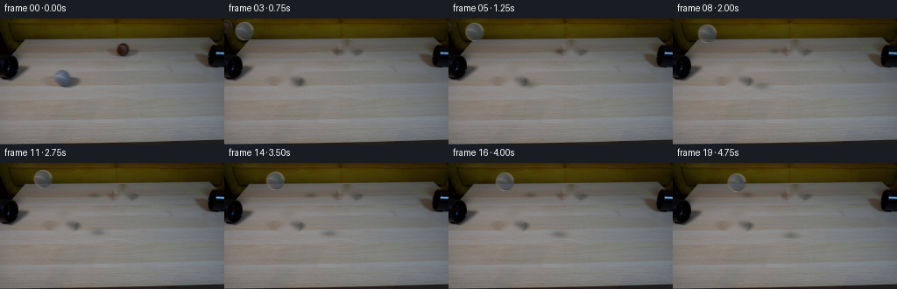
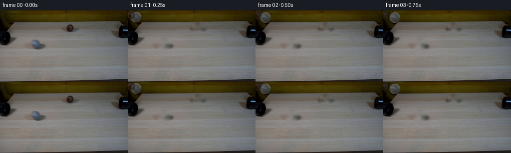
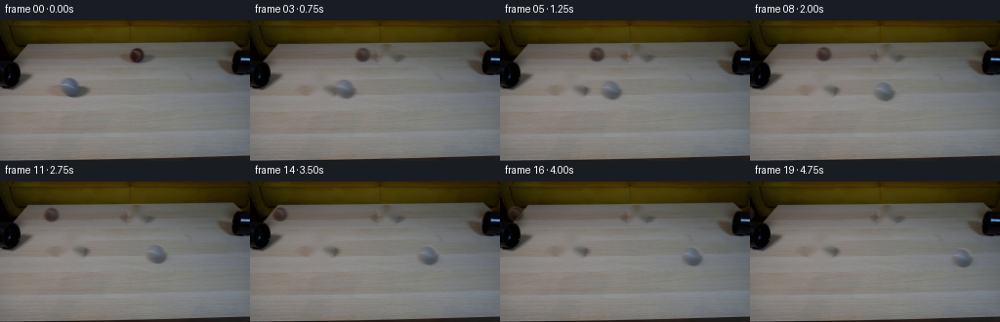
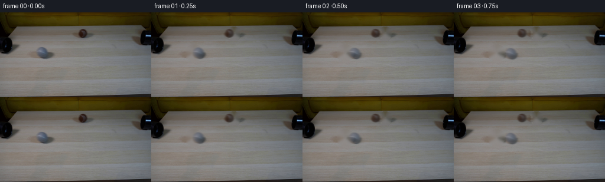

CODING AGENTS AS PIXEL WORLD MODELS
traex/DeepSeek-V4.1-Flash · 0179
点击播放 · 原生 RGB 像素
逐轮保存的候选
回放视频、检查图与代码变化。
每份候选均可单独播放。实际图片检查记录在下方工具轨迹中。
候选 01播放与检查图
点击播放 · 原生 RGB 像素


展开代码变化
--- 上一保存版本
+++ 本次保存版本
@@ -0,0 +1,169 @@
+from pathlib import Path
+
+import cv2
+import numpy as np
+from PIL import Image
+from scipy.ndimage import gaussian_filter
+
+import artifact_io
+
+
+WIDTH = 256
+HEIGHT = 144
+FRAME_COUNT = 20
+FPS = 4
+
+
+class RollingBall:
+ def __init__(self, center, radius, velocity, acceleration):
+ self.center = np.asarray(center, dtype=np.float64)
+ self.radius = float(radius)
+ self.velocity = np.asarray(velocity, dtype=np.float64)
+ self.acceleration = np.asarray(acceleration, dtype=np.float64)
+ self.sprite, self.alpha, self.origin = self._extract_sprite()
+
+ def _extract_sprite(self):
+ margin = 3
+ cx, cy = self.center
+ radius = self.radius
+ x0 = int(np.floor(cx - radius - margin))
+ y0 = int(np.floor(cy - radius - margin))
+ x1 = int(np.ceil(cx + radius + margin)) + 1
+ y1 = int(np.ceil(cy + radius + margin)) + 1
+
+ yy, xx = np.mgrid[y0:y1, x0:x1]
+ distance = np.hypot(xx + 0.5 - cx, yy + 0.5 - cy)
+ coverage = np.clip((radius + 0.7 - distance) / 1.4, 0.0, 1.0)
+ coverage = coverage * coverage * (3.0 - 2.0 * coverage)
+
+ rgb = FIRST_FRAME[y0:y1, x0:x1].copy()
+ return rgb, coverage.astype(np.float32), np.asarray([x0, y0], dtype=np.float64)
+
+ def position(self, frame_time):
+ t = np.asarray(frame_time, dtype=np.float64)
+ return self.center + self.velocity * t + 0.5 * self.acceleration * (t * t)
+
+ def draw(self, canvas, frame_time, blur_time=0.075):
+ samples = np.linspace(frame_time - blur_time, frame_time + blur_time, 7)
+ weights = np.exp(-0.5 * ((samples - frame_time) / (blur_time * 0.55)) ** 2)
+ weights /= weights.sum()
+
+ for sample_time, weight in zip(samples, weights):
+ center = self.position(sample_time)
+ self._draw_shadow(canvas, center, weight)
+ self._draw_sprite(canvas, center, weight)
+
+ def _draw_shadow(self, canvas, center, weight):
+ radius = self.radius
+ cx = center[0] + radius * 0.24
+ cy = center[1] + radius * 0.46
+ x0 = max(0, int(np.floor(cx - radius * 1.45)))
+ x1 = min(WIDTH, int(np.ceil(cx + radius * 1.45)))
+ y0 = max(0, int(np.floor(cy - radius * 0.75)))
+ y1 = min(HEIGHT, int(np.ceil(cy + radius * 0.75)))
+ if x0 >= x1 or y0 >= y1:
+ return
+
+ yy, xx = np.mgrid[y0:y1, x0:x1]
+ dx = (xx + 0.5 - cx) / (radius * 1.32)
+ dy = (yy + 0.5 - cy) / (radius * 0.58)
+ shadow = np.exp(-2.7 * (dx * dx + dy * dy)).astype(np.float32)
+ strength = 0.24 * float(weight)
+ canvas[y0:y1, x0:x1] *= (1.0 - strength * shadow[..., None])
+
+ def _draw_sprite(self, canvas, center, weight):
+ x0, y0 = self.origin
+ h, w = self.alpha.shape
+ target_x = int(np.floor(center[0] - self.radius - 3))
+ target_y = int(np.floor(center[1] - self.radius - 3))
+ dx = target_x - int(x0)
+ dy = target_y - int(y0)
+
+ matrix = np.float32([[1.0, 0.0, dx], [0.0, 1.0, dy]])
+ rgb = cv2.warpAffine(
+ self.sprite,
+ matrix,
+ (WIDTH, HEIGHT),
+ flags=cv2.INTER_LINEAR,
+ borderMode=cv2.BORDER_REPLICATE,
+ )
+ alpha = cv2.warpAffine(
+ self.alpha,
+ matrix,
+ (WIDTH, HEIGHT),
+ flags=cv2.INTER_LINEAR,
+ borderMode=cv2.BORDER_CONSTANT,
+ borderValue=0.0,
+ )
+ alpha *= float(weight)
+ canvas[:] = canvas * (1.0 - alpha[..., None]) + rgb * alpha[..., None]
+
+
+def build_clean_plate():
+ clean = FIRST_FRAME.copy()
+ mask = np.zeros((HEIGHT, WIDTH), dtype=np.uint8)
+
+ yy, xx = np.mgrid[:HEIGHT, :WIDTH]
+ left = ((xx + 0.5 - 72.5) / 14.0) ** 2 + ((yy + 0.5 - 69.0) / 14.0) ** 2 <= 1.0
+ right = ((xx + 0.5 - 140.0) / 10.5) ** 2 + ((yy + 0.5 - 35.5) / 10.5) ** 2 <= 1.0
+ mask[left | right] = 255
+ mask = cv2.dilate(mask, np.ones((3, 3), dtype=np.uint8), iterations=1)
+
+ inpainted = cv2.inpaint(
+ cv2.cvtColor(clean, cv2.COLOR_RGB2BGR),
+ mask,
+ 5,
+ cv2.INPAINT_TELEA,
+ )
+ inpainted = cv2.cvtColor(inpainted, cv2.COLOR_BGR2RGB).astype(np.float32)
+
+ # Restore fine wood-grain statistics inside the repaired areas.
+ donors = [
+ (slice(57, 84), slice(91, 117), slice(57, 84), slice(62, 88)),
+ (slice(25, 47), slice(112, 134), slice(25, 47), slice(129, 151)),
+ ]
+ for y_dst, x_dst, y_src, x_src in donors:
+ donor = FIRST_FRAME[y_src, x_src].astype(np.float32)
+ detail = donor - gaussian_filter(donor, sigma=(2.2, 2.2, 0.0))
+ local_mask = mask[y_dst, x_dst].astype(np.float32) / 255.0
+ local_mask = gaussian_filter(local_mask, sigma=0.8)[..., None]
+ region = inpainted[y_dst, x_dst]
+ region += detail * 0.72 * local_mask
+
+ return np.clip(inpainted, 0.0, 255.0).astype(np.uint8)
+
+
+def render():
+ clean_plate = build_clean_plate().astype(np.float32)
+ grey = RollingBall(
+ center=(72.5, 68.5),
+ radius=10.5,
+ velocity=(13.8, 2.2),
+ acceleration=(-0.48, -0.08),
+ )
+ brown = RollingBall(
+ center=(140.0, 35.5),
+ radius=7.5,
+ velocity=(-13.0, -0.58),
+ acceleration=(0.45, 0.015),
+ )
+
+ frames = np.empty((FRAME_COUNT, HEIGHT, WIDTH, 3), dtype=np.uint8)
+ frames[0] = FIRST_FRAME
+ for index in range(1, FRAME_COUNT):
+ canvas = clean_plate.copy()
+ frame_time = index / FPS
+ grey.draw(canvas, frame_time)
+ brown.draw(canvas, frame_time)
+ frames[index] = np.clip(np.rint(canvas), 0, 255).astype(np.uint8)
+
+ return frames
+
+
+CASE_DIR = Path(__file__).resolve().parent
+FIRST_FRAME = np.asarray(Image.open(CASE_DIR / "first_frame.png").convert("RGB"), dtype=np.uint8)
+
+
+if __name__ == "__main__":
+ generated = render()
+ artifact_io.save(generated, CASE_DIR)
候选 02播放与检查图
点击播放 · 原生 RGB 像素


展开代码变化
--- 上一保存版本
+++ 本次保存版本
@@ -72,12 +72,11 @@
canvas[y0:y1, x0:x1] *= (1.0 - strength * shadow[..., None])
def _draw_sprite(self, canvas, center, weight):
- x0, y0 = self.origin
h, w = self.alpha.shape
- target_x = int(np.floor(center[0] - self.radius - 3))
- target_y = int(np.floor(center[1] - self.radius - 3))
- dx = target_x - int(x0)
- dy = target_y - int(y0)
+ target_x = center[0] - self.radius - 3
+ target_y = center[1] - self.radius - 3
+ dx = target_x
+ dy = target_y
matrix = np.float32([[1.0, 0.0, dx], [0.0, 1.0, dy]])
rgb = cv2.warpAffine(
@@ -138,14 +137,14 @@
grey = RollingBall(
center=(72.5, 68.5),
radius=10.5,
- velocity=(13.8, 2.2),
- acceleration=(-0.48, -0.08),
+ velocity=(34.0, 2.2),
+ acceleration=(-1.5, -0.05),
)
brown = RollingBall(
center=(140.0, 35.5),
radius=7.5,
- velocity=(-13.0, -0.58),
- acceleration=(0.45, 0.015),
+ velocity=(-34.0, -0.58),
+ acceleration=(1.5, 0.01),
)
frames = np.empty((FRAME_COUNT, HEIGHT, WIDTH, 3), dtype=np.uint8)
可观测工具轨迹
实际执行的命令与返回图片。
命令 1exit 0
/bin/bash -c "sed -n '1,240p' prompt.txt"
命令 2exit 0
/bin/bash -c "pwd && rg --files -g 'prompt.txt' -g 'GENERATION_RULES.md' -g 'first_frame.png' -g '"'!node_modules'"'"
命令 3exit 0
/bin/bash -c "sed -n '1,280p' GENERATION_RULES.md"
命令 4exit 0
/bin/bash -c "find . -maxdepth 2 -type f -printf '%p %s bytes\\n' | sort | head -80"
命令 5exit 0
/bin/bash -c "sed -n '1,260p' artifact_io.py"
命令 6exit 0
/bin/bash -c "python - <<'PY'
from PIL import Image
import numpy as np
im=Image.open('first_frame.png')
a=np.array(im)
print(im.mode, im.size, a.shape, a.dtype)
print('min/max/mean/std', a.min(axis=(0,1)), a.max(axis=(0,1)), a.mean(axis=(0,1)), a.std(axis=(0,1)))
for y in range(0,144,8):
row=a[y]
print(f'{y:3d}', ' '.join(f'{row[x,0]:02x}{row[x,1]:02x}{row[x,2]:02x}' for x in range(0,256,16)))
PY"命令 7exit 0
/bin/bash -c "sed -n '1,240p' player_template.html"
命令 8exit 0
/bin/bash -c "python - <<'PY'
from PIL import Image
import numpy as np
im=np.array(Image.open('first_frame.png')).astype(float)
# print coarse RGB blocks averaged 8x8 with hex and luminance category
for y in range(0,144,8):
vals=[]
for x in range(0,256,8):
b=im[y:y+8,x:x+8].mean((0,1)).astype(int)
vals.append('%02x%02x%02x'%tuple(b))
print(f'{y:03d}', ' '.join(vals))
PY"命令 9exit 0
/bin/bash -c "python - <<'PY'
from PIL import Image
import numpy as np
im=np.array(Image.open('first_frame.png')).astype(int)
# summary every 16 x 8: brightness chars
chars=' .:-=+*#%@'
for y in range(0,144,4):
s=''
for x in range(0,256,4):
b=im[y:y+4,x:x+4].mean()
s+=chars[min(9,int(b/256*10))]
print(f'{y:03d} {s}')
PY"命令 10exit 0
/bin/bash -c "python - <<'PY'
from PIL import Image
import numpy as np
im=np.array(Image.open('first_frame.png')).astype(float)
# kmeans if available
try:
from sklearn.cluster import MiniBatchKMeans
X=im.reshape(-1,3)
km=MiniBatchKMeans(12,random_state=0,n_init=3,batch_size=4096).fit(X)
lab=km.labels_.reshape(144,256)
for i,c in enumerate(km.cluster_centers_):
ys,xs=np.where(lab==i)
print(i, len(xs), tuple(c.astype(int)), 'bbox', (xs.min(),ys.min(),xs.max(),ys.max()), 'centroid',(xs.mean(),ys.mean()))
except Exception as e: print(e)
PY"命令 11exit 0
/bin/bash -c "python - <<'PY'
from PIL import Image
import numpy as np
from scipy.ndimage import sobel, gaussian_filter
im=np.array(Image.open('first_frame.png')).astype(float)
g=im.mean(2)
e=np.hypot(sobel(g,0),sobel(g,1))
for y in range(0,144,2):
s=''
for x in range(0,256,2):
v=e[y:y+2,x:x+2].mean()
s += ' ' if v<10 else '.' if v<25 else ':' if v<50 else '*' if v<90 else '#' if v<150 else '@'
print(f'{y:03d} {s}')
PY"命令 12exit 0
/bin/bash -c "python - <<'PY'
import cv2, numpy as np
im=cv2.imread('first_frame.png')
g=cv2.cvtColor(im,cv2.COLOR_BGR2GRAY)
for p2 in [8,10,12,14,16,18,20,24]:
c=cv2.HoughCircles(g,cv2.HOUGH_GRADIENT,dp=1,minDist=10,param1=60,param2=p2,minRadius=4,maxRadius=22)
print('p2',p2, None if c is None else np.round(c[0],1).tolist())
PY"命令 13exit 0
/bin/bash -c "python - <<'PY'
from PIL import Image
import numpy as np
im=np.array(Image.open('first_frame.png'))
# produce enlarged nearest-neighbor and labeled grid overlay for our own numeric examination
Image.fromarray(im).resize((1024,576),Image.Resampling.NEAREST).save('.tmp/frame4x.png')
from PIL import ImageDraw
u=Image.fromarray(im).resize((1024,576),Image.Resampling.NEAREST)
d=ImageDraw.Draw(u)
for x in range(0,256,16):
d.line((x*4,0,x*4,576),fill=(255,0,0),width=1); d.text((x*4+2,2),str(x),fill=(255,255,0))
for y in range(0,144,16):
d.line((0,y*4,1024,y*4),fill=(255,0,0),width=1); d.text((2,y*4+2),str(y),fill=(255,255,0))
u.save('.tmp/frame_grid.png')
PY"命令 14exit 0
/bin/bash -c "python - <<'PY'
from PIL import Image
import numpy as np
im=np.array(Image.open('first_frame.png')).astype(float)
# edge of dark regions: binary map of pixels luminance under threshold, print downsampled
for th in [20,40,60,80]:
print('TH',th)
for y in range(16,84,2):
s=''
for x in range(0,256,2):
b=im[y:y+2,x:x+2].mean()
s += '#' if b<th else ' '
print(f'{y:03d} {s}')
PY"命令 15exit 0
/bin/bash -c "python - <<'PY'
from PIL import Image
import numpy as np
im=np.array(Image.open('first_frame.png')).astype(float)
for y in range(20,80):
# runs of luminance below 60
m=im[y].mean(1)<60
runs=[]; st=None
for i,v in enumerate(np.r_[m,False]):
if v and st is None:st=i
elif not v and st is not None:runs.append((st,i-1));st=None
if runs: print(y,runs)
PY"命令 16exit 0
/bin/bash -c "python - <<'PY'
from PIL import Image
import numpy as np
im=np.array(Image.open('first_frame.png')).astype(float)
# key regions raw pixel rows / print luminance color values around suspected pipes
for box in [(0,20,60,72),(120,20,160,55),(225,20,256,70),(60,64,90,84)]:
x0,y0,x1,y1=box
print('BOX',box)
for y in range(y0,y1,2):
vals=[]
for x in range(x0,x1,2):
p=im[y:y+2,x:x+2].mean((0,1)).astype(int)
vals.append('%02x%02x%02x'%tuple(p))
print(y,' '.join(vals))
PY"命令 17exit 0
/bin/bash -c "python - <<'PY'
import cv2,numpy as np
im=cv2.imread('first_frame.png')[:,:,::-1]
g=im.mean(2)
for th in [12,20,30,45,60]:
m=(g<th).astype('uint8')*255
n,lab,st,cen=cv2.connectedComponentsWithStats(m,8)
comps=[]
for i in range(1,n):
x,y,w,h,a=st[i]
if a>=10: comps.append((a,x,y,w,h,tuple(np.round(cen[i],1))))
print('\\nTH',th,'components',sorted(comps,reverse=True)[:15])
PY"命令 18exit 0
/bin/bash -c "python - <<'PY'
from PIL import Image
import numpy as np
im=np.array(Image.open('first_frame.png')).astype(float)
g=im.mean(2)
# per-row dark runs threshold 45, top 70 only
for y in range(20,70):
m=g[y]<45;r=[];st=None
for i,v in enumerate(np.r_[m,False]):
if v and st is None:st=i
elif not v and st is not None:
if i-st>=2:r.append((st,i-1))
st=None
print(f'{y:02d}',r)
PY"命令 19exit 0
/bin/bash -c "python - <<'PY' import importlib.util for m in ['cv2','scipy','skimage','imageio','ffmpeg','av']: print(m, importlib.util.find_spec(m) is not None) PY ffmpeg -version | head -2"
命令 20exit 0
/bin/bash -c "python - <<'PY'
from PIL import Image
import numpy as np
im=np.array(Image.open('first_frame.png')).astype(int)
# Lab color ranges or print colors around yellow object
for name,(x0,y0,x1,y1) in {'yellow':(125,20,155,50),'leftball':(25,48,62,78),'pipeleft':(0,20,40,70),'piperight':(235,20,256,55)}.items():
a=im[y0:y1,x0:x1].reshape(-1,3)
print(name,'mean',a.mean(0),'median',np.median(a,0),'min',a.min(0),'max',a.max(0))
# quantiles brightness/color
print(' q10,q90',np.quantile(a,[.1,.9],axis=0))
PY"命令 21exit 0
/bin/bash -c "python - <<'PY'
from PIL import Image
import numpy as np
im=np.array(Image.open('first_frame.png')).astype(float)
# print 4x4 block colors in likely ball regions
for name,box in [('L',(20,45,65,82)),('R',(120,20,160,50))]:
x0,y0,x1,y1=box
print(name)
for y in range(y0,y1,4):
print(f'{y:02d}',' '.join('%02x%02x%02x'%tuple(im[y:y+4,x:x+4].mean((0,1)).astype(int)) for x in range(x0,x1,4)))
PY"命令 22exit 0
/bin/bash -c "python - <<'PY'
from PIL import Image
import numpy as np
im=np.array(Image.open('first_frame.png')).astype(float)
for y in [24,28,32,36,40,44,48,52,56,60,64,68,72,76,80]:
# 8-wide region medians at x=0..80
print(y,' '.join('%02x%02x%02x'%tuple(np.median(im[y:y+1,max(0,x-2):x+3],axis=(0,1)).astype(int)) for x in range(0,80,4)))
PY"命令 23exit 0
/bin/bash -c "python - <<'PY'
from PIL import Image
import numpy as np
im=np.array(Image.open('first_frame.png')).astype(float)
# foreground table mask: sample edge boundaries per row
# print vertical gradient strongest in x=0..255, y=15..143
for x in [0,10,20,30,40,60,80,100,120,140,160,180,200,220,240,255]:
g=np.abs(np.diff(im[:,x].mean(1)))
inds=np.argsort(g)[-8:][::-1]
print(x,[(int(i),round(g[i],1)) for i in inds])
PY"命令 24exit 0
/bin/bash -c "python - <<'PY'
from PIL import Image
import numpy as np
im=np.array(Image.open('first_frame.png'))
Image.fromarray(im).crop((0,20,256,80)).resize((1280,300),Image.Resampling.NEAREST).save('.tmp/top5x.png')
Image.fromarray(im).crop((0,50,100,100)).resize((800,400),Image.Resampling.NEAREST).save('.tmp/left8x.png')
PY"命令 25exit 0
/bin/bash -c "python - <<'PY'
from PIL import Image
import numpy as np
im=np.array(Image.open('first_frame.png')).astype(float)
# saturation/yellowness map 2x2 blocks top 50
for y in range(20,52,2):
s=''
for x in range(0,256,2):
p=im[y:y+2,x:x+2].mean((0,1)); sat=p.max()-p.min()
s += ' ' if sat<10 else '.' if sat<25 else ':' if sat<45 else '*' if sat<65 else '#'
print(f'{y:02d} {s}')
PY"命令 26exit 0
/bin/bash -c "python - <<'PY'
from PIL import Image
import numpy as np
im=np.array(Image.open('first_frame.png')).astype(float)
# segment table mask likely y>=22 and brightness >35 except dark pipes; find vertical edge rows
# row horizontal gradient summaries
for y in range(20,144,4):
gx=np.abs(np.diff(im[y].mean(1)))
top=np.argsort(gx)[-12:][::-1]
print(y,[(int(i),round(gx[i],1)) for i in top[:8]])
PY"命令 27exit 0
/bin/bash -c "python - <<'PY'
from PIL import Image
import numpy as np
im=np.array(Image.open('first_frame.png')).astype(float)
# detect colored tennis ball pixels by hue-ish conditions, print connected bboxes
r,g,b=im.transpose(2,0,1)
# ball brown: high R relative B, gray: etc. Table itself yellowish; need inspect pixels not likely table by saturation/local.
# Print high chroma points and coords
for condname,m in [
('brown',(r>g+6)&(g>b+3)&(r<150)&(g>60)),
('gray',(np.abs(r-g)<5)&(np.abs(g-b)<8)&(r>55)&(r<130)),
('brightball',(r>120)&(g>110)&(b>100)),
]:
import cv2
m=(m.astype('uint8')*255)
n,lab,st,cen=cv2.connectedComponentsWithStats(m,8)
comps=sorted([(int(st[i,4]),tuple(map(int,st[i,:4])),tuple(np.round(cen[i],1))) for i in range(1,n) if st[i,4]>15],reverse=True)
print(condname,comps[:20])
PY"命令 28exit 0
/bin/bash -c "python - <<'PY'
from PIL import Image
import numpy as np
im=np.array(Image.open('first_frame.png')).astype(float)
for name,(x0,y0,x1,y1) in [('A',(0,88,90,120)),('B',(65,132,125,144)),('C',(100,100,165,120)),('D',(45,120,90,144))]:
print('\\n',name)
for y in range(y0,y1,2):
print(f'{y:03d}',' '.join('%02x%02x%02x'%tuple(im[y:y+2,x:x+2].mean((0,1)).astype(int)) for x in range(x0,x1,4)))
PY"命令 29exit 0
/bin/bash -c "python - <<'PY'
from PIL import Image
import numpy as np
im=np.array(Image.open('first_frame.png')).astype(float)
# examine possible balls as local outliers against blur background
from scipy.ndimage import gaussian_filter
blur=gaussian_filter(im,sigma=(5,5,0))
d=np.linalg.norm(im-blur,axis=2)
for y in range(20,144,4):
s=''
for x in range(0,256,4):
v=d[y:y+4,x:x+4].mean()
s += ' ' if v<2 else '.' if v<4 else ':' if v<7 else '*' if v<12 else '#' if v<20 else '@'
print(f'{y:03d} {s}')
PY"命令 30exit 0
/bin/bash -c "python - <<'PY'
from PIL import Image
import numpy as np
im=np.array(Image.open('first_frame.png')).astype(int)
# print RGB bytes at selected likely circles
for name,(cx,cy) in [('left',(48,62)),('right',(142,35)),('topmarker',(140,35)),('mid',(75,70))]:
print(name)
for y in range(cy-12,cy+13,2):
print(f'{y:3d}', ' '.join('%02x%02x%02x'%tuple(im[y,x]) for x in range(cx-12,cx+13,2)))
PY"命令 31exit 0
/bin/bash -c "python - <<'PY'
from PIL import Image
import numpy as np
im=np.array(Image.open('first_frame.png')).astype(float)
# chroma map using r-b and r-g at top
for y in range(20,50,2):
s=''
for x in range(0,256,2):
p=im[y:y+2,x:x+2].mean((0,1)); v=p[0]-p[2]
s += ' ' if v<10 else '.' if v<20 else ':' if v<30 else '*' if v<40 else '#' if v<50 else '@'
print(f'{y:02d} {s}')
PY"命令 32exit 0
/bin/bash -c "python - <<'PY'
from PIL import Image
import numpy as np
im=np.array(Image.open('first_frame.png')).astype(float)
for name,(cx,cy) in [('left',(70,69)),('right',(140,35))]:
print('\\n',name)
for r in range(0,16):
vals=[]
for a in np.linspace(0,2*np.pi,32,endpoint=False):
x=int(round(cx+r*np.cos(a))); y=int(round(cy+r*np.sin(a)))
if 0<=x<256 and 0<=y<144: vals.append(im[y,x].mean())
print(r,round(np.mean(vals),1),round(np.min(vals),1),round(np.max(vals),1))
PY"命令 33exit 0
/bin/bash -c "python - <<'PY'
from PIL import Image
import numpy as np
im=np.array(Image.open('first_frame.png')).astype(float)
# Find high chroma brown circular blob by template matching with a brown-ish ball disk over a local ring estimate
from scipy.ndimage import gaussian_filter
# candidate ball radius 5-10 based edges. score contrast of chroma between disk and ring for each center
R,G,B=im.transpose(2,0,1)
ch=R-B
best=[]
for cy in range(25,100):
for cx in range(20,235):
yy,xx=np.ogrid[:144,:256]; d2=(xx-cx)**2+(yy-cy)**2
for r in [6,7,8,9,10,11,12]:
disk=d2<=r*r; ring=(d2>=(r+2)**2)&(d2<=(r+4)**2)
if disk.sum()<20: continue
v=ch[disk].mean()-ch[ring].mean()
if v>10:best.append((v,cx,cy,r))
print(sorted(best,reverse=True)[:30])
PY"命令 34exit 0
/bin/bash -c "python - <<'PY'
from PIL import Image
import numpy as np
im=np.array(Image.open('first_frame.png')).astype(float)
for name,(x0,y0,x1,y1) in [('ballleft',(50,64,66,80)),('ballright',(128,29,142,43)),('pipeleft',(0,20,32,72)),('piperight',(232,20,256,60))]:
print(name)
a=im[y0:y1,x0:x1]
print('mean',np.round(a.mean((0,1)),1),'std',np.round(a.std((0,1)),1))
PY"命令 35exit 0
/bin/bash -c "python - <<'PY'
from PIL import Image
import numpy as np
im=np.array(Image.open('first_frame.png')).astype(float)
# list exact color table for right marker/ball candidate 128-142,28-42
for y in range(28,43):
print(f'{y:02d}',' '.join('%02x%02x%02x'%tuple(im[y,x].astype(int)) for x in range(126,147)))
PY"命令 36exit 0
/bin/bash -c "python - <<'PY'
from PIL import Image
import numpy as np
im=np.array(Image.open('first_frame.png')).astype(float)
for x in range(0,256,8):
col=im[:,x].mean(1)
print(x, ' '.join(f'{int(col[y]):3d}' for y in range(20,76,4)))
PY"命令 37exit 0
/bin/bash -c "python - <<'PY'
from PIL import Image
import numpy as np
im=np.array(Image.open('first_frame.png')).astype(float)
for x in range(120,160,2):
col=im[:,x].mean(1)
print(x, ' '.join(f'{int(col[y]):3d}' for y in range(24,48,2)))
PY"命令 38exit 0
/bin/bash -c "python - <<'PY'
from PIL import Image
import numpy as np
im=np.array(Image.open('first_frame.png')).astype(float)
# print color of suspected tennis ball at 58,72 / 134,37 and around
for cx,cy in [(58,72),(134,37)]:
print('center',cx,cy)
for y in range(cy-7,cy+8):
print(f'{y:02d}', ' '.join('%02x%02x%02x'%tuple(im[y,x].astype(int)) for x in range(cx-7,cx+8)))
PY"命令 39exit 0
/bin/bash -c "python - <<'PY'
from PIL import Image
import numpy as np
im=np.array(Image.open('first_frame.png')).astype(float)
# print table front edge y around 136-143 as chars color hue
for y in range(132,144):
print(f'{y:03d}', ' '.join('%02x%02x%02x'%tuple(im[y,x].astype(int)) for x in range(0,256,8)))
PY"命令 40exit 0
/bin/bash -c "python - <<'PY'
from PIL import Image
import numpy as np, cv2
im=np.array(Image.open('first_frame.png')).astype(float)
r,g,b=im.transpose(2,0,1)
conds={
'bluegray':(b-r>4)&(b-g>2)&(b<120),
'darkblue':(b-r>7)&(b>45)&(b<115),
'bluepatch':(b-r>10)&(b-g>3)&(b<130),
}
for name,m in conds.items():
n,lab,st,cen=cv2.connectedComponentsWithStats(m.astype('uint8'),8)
comps=sorted([(int(st[i,4]),tuple(map(int,st[i,:4])),tuple(np.round(cen[i],1))) for i in range(1,n) if st[i,4]>=8],reverse=True)
print(name,comps[:20])
PY"命令 41exit 0
/bin/bash -c "python - <<'PY'
from PIL import Image
import numpy as np
im=np.array(Image.open('first_frame.png')).astype(int)
# print region right x 220-256 y 20-60 exact every 1 x 2 y compact luminance/chroma
for y in range(20,61,2):
s=''
for x in range(215,256):
p=im[y,x]; v=p.mean(); c=p[2]-p[0]
s += '@' if v<15 else '#' if v<30 else '*' if v<45 else '+' if v<65 else '-' if v<85 else '=' if v<105 else '.' if v<125 else ' '
print(f'{y:02d} {s}')
PY"命令 42exit 0
/bin/bash -c "python - <<'PY'
from PIL import Image
import numpy as np
im=np.array(Image.open('first_frame.png')).astype(int)
# print left region 0..40 20..70 chars
for y in range(20,71,2):
s=''
for x in range(0,45):
p=im[y,x]; v=p.mean()
s += '@' if v<15 else '#' if v<30 else '*' if v<45 else '+' if v<65 else '-' if v<85 else '=' if v<105 else '.' if v<125 else ' '
print(f'{y:02d} {s}')
PY"命令 43exit 0
/bin/bash -c "python - <<'PY'
from PIL import Image
import numpy as np
im=np.array(Image.open('first_frame.png')).astype(float)
# test whether foreground region left of pipe is clean table: compare base background reconstruction using table pixel patterns
# dump row 76 color runs to inspect ball shadow boundary
for y in [56,60,64,68,72,76,78,80]:
print('Y',y)
for x in range(50,100,2): print(x, tuple(im[y,x].astype(int)), end='; ')
print()
PY"命令 44exit 0
/bin/bash -c "python - <<'PY'
from PIL import Image
import numpy as np
im=np.array(Image.open('first_frame.png')).astype(float)
# at y 60, look at x 55..85 colors to identify ball vs table shadow
for x in range(55,86): print(x, tuple(im[60,x].astype(int)), tuple(im[64,x].astype(int)),tuple(im[68,x].astype(int)),tuple(im[72,x].astype(int)))
PY"命令 45exit 0
/bin/bash -c "python - <<'PY'
from PIL import Image
import numpy as np
im=np.array(Image.open('first_frame.png')).astype(float)
# crop write several candidate views for later if needed (not visual tool, just files)
for name,box,scale in [('left',(20,40,100,90),8),('right',(120,20,180,60),8),('table',(0,20,256,144),3)]:
crop=Image.fromarray(im.astype('uint8')).crop(box)
crop.resize((crop.width*scale,crop.height*scale),Image.Resampling.NEAREST).save('.tmp/'+name+'_view.png')
PY"命令 46exit 0
/bin/bash -c "python - <<'PY'
from PIL import Image
import numpy as np
im=np.array(Image.open('first_frame.png')).astype(float)
# HSV hue patches likely object blue / brown
import cv2
hsv=cv2.cvtColor(im.astype('uint8'),cv2.COLOR_RGB2HSV).astype(float)
for y in range(20,100,4):
s=''
for x in range(0,256,4):
p=hsv[y:y+4,x:x+4].mean((0,1)); h,sat,v=p
if v<50: ch=' '
elif sat>40 and 90<h<135: ch='B'
elif sat>40 and h<30: ch='O'
elif sat>25 and 25<=h<55: ch='Y'
elif sat>25 and 55<=h<90: ch='G'
else: ch='.'
s+=ch
print(f'{y:03d} {s}')
PY"命令 47exit 0
/bin/bash -c "python - <<'PY'
from PIL import Image
import numpy as np
im=np.array(Image.open('first_frame.png')).astype(float)
# pixel connected comps blue around x=64 y=59
import cv2
r,g,b=im.transpose(2,0,1)
m=((b-r>4)&(b-g>2)&(b<150)).astype('uint8')
n,lab,st,cen=cv2.connectedComponentsWithStats(m,8)
for i in range(1,n):
x,y,w,h,a=st[i]
if 50<=x<=90 and 40<=y<=90 and a>5:
print(i,(x,y,w,h,a),cen[i])
# save mask crop enlarged with raw rgb
ys,xs=np.where(lab==i)
print('colors min max mean', im[ys,xs].min(0),im[ys,xs].max(0),im[ys,xs].mean(0))
PY"命令 48exit 0
/bin/bash -c "python - <<'PY'
from PIL import Image
import numpy as np
im=np.array(Image.open('first_frame.png')).astype(float)
# determine clean table region baseline via low-rank/row interpolation? inspect main bright table surface y 76-143 for texture
# measure local variation and table plane color trends
for y in range(76,144,4):
row=im[y]
print(y,'mean',np.round(row.mean(0),1),'std',np.round(row.std(0),1))
PY"命令 49exit 0
/bin/bash -c "python - <<'PY'
from PIL import Image
import numpy as np
im=np.array(Image.open('first_frame.png')).astype(int)
# detect balls via circle likelihood of radial color contrast excluding table plane. score low luminance disk vs ring
from scipy.ndimage import gaussian_filter
Y=im.mean(2)
best=[]
for cy in range(26,135):
for cx in range(12,244):
yy,xx=np.ogrid[:144,:256]; d2=(xx-cx)**2+(yy-cy)**2
for r in [5,6,7,8,9,10]:
disk=d2<=r*r; ring=(d2>=(r+2)**2)&(d2<=(r+5)**2)
contrast=Y[ring].mean()-Y[disk].mean()
# require circularly symmetric low variance vs rough
if contrast>10: best.append((contrast,cx,cy,r,Y[disk].mean(),Y[ring].mean()))
print(sorted(best,reverse=True)[:40])
PY"命令 50exit 0
/bin/bash -c "python - <<'PY'
from PIL import Image
import numpy as np
im=np.array(Image.open('first_frame.png')).astype(float)
# inspect x 10-25 y 50-70 whether brown/grey ball near pipe
for y in range(48,72,2):
print(f'{y:02d}', ' '.join('%02x%02x%02x'%tuple(im[y,x].astype(int)) for x in range(0,32,2)))
PY"命令 51exit 0
/bin/bash -c "python - <<'PY'
from PIL import Image
import numpy as np
im=np.array(Image.open('first_frame.png')).astype(float)
# left blue ball around 72,68: derive circle radius and center via dark disk luminance. print rgb table
print('left ball RGB')
for y in range(56,82):
print(f'{y:02d}', ' '.join('%02x%02x%02x'%tuple(im[y,x].astype(int)) for x in range(60,86)))
PY"命令 52exit 0
/bin/bash -c "python - <<'PY'
from PIL import Image
import numpy as np
im=np.array(Image.open('first_frame.png')).astype(float)
# Check x 0-30 y 20-70 table boundary / pipe; maybe pipe diagonal
for y in range(20,72,2):
m=im[y].mean(1)
# first >50 x
inds=np.where(m>50)[0]
print(y, int(inds[0]) if len(inds) else None, int(inds[-1]) if len(inds) else None, 'x0..10',np.round(m[:10],0).astype(int).tolist())
PY"命令 53exit 0
/bin/bash -c "python - <<'PY'
from PIL import Image
import numpy as np
im=np.array(Image.open('first_frame.png')).astype(float)
# test pipe positions likely mouths: left around x=20 y=52, right x=240 y=44; inspect edge shape
# print max brightness in each row x0-25
for y in range(20,72,2):
print(y, np.round(im[y,:25].mean(1),0).astype(int).tolist())
PY"命令 54exit 0
/bin/bash -c 'python generate.py'
命令 55exit 0
/bin/bash -c "python - <<'PY'
import numpy as np
from PIL import Image
p=np.load('pixels.npz')['pixels']
print('pixels',p.shape,p.dtype)
f0=np.asarray(Image.open('first_frame.png').convert('RGB'))
frames=np.stack([np.asarray(Image.open(f'frames/{i:02d}.png').convert('RGB')) for i in range(20)])
print('frames',frames.shape,frames.dtype,'frame0 identical',np.array_equal(frames[0],f0))
for i in range(20):
d=np.max(np.abs(frames[i].astype(int)-f0.astype(int)),axis=2)
ys,xs=np.where(d>2)
bbox=None if len(xs)==0 else (xs.min(),ys.min(),xs.max(),ys.max())
print(f'{i:02d} mean={frames[i].mean():6.2f} changed={len(xs):5d} bbox={bbox}')
PY"命令 56exit 0
/bin/bash -c "python - <<'PY'
from PIL import Image
import numpy as np
f0=np.asarray(Image.open('first_frame.png').convert('RGB')).astype(int)
f1=np.asarray(Image.open('frames/01.png').convert('RGB')).astype(int)
d=np.max(np.abs(f1-f0),axis=2)
# changed components
import cv2
m=(d>2).astype('uint8')
n,lab,st,cen=cv2.connectedComponentsWithStats(m,8)
for i in sorted(range(1,n), key=lambda i:-st[i,4])[:20]:
print(int(st[i,4]), tuple(map(int,st[i,:4])), np.round(cen[i],1))
PY"命令 57exit 0
/bin/bash -c "python - <<'PY'
from PIL import Image
import numpy as np
f0=np.asarray(Image.open('first_frame.png').convert('RGB')).astype(int)
for idx in [0,1,4,8,12,16,19]:
f=np.asarray(Image.open(f'frames/{idx:02d}.png').convert('RGB')).astype(int)
d=np.max(np.abs(f-f0),axis=2)
print(idx,'top',d[0:25].max(),'left',d[:,0:30].max(),'right',d[:,220:].max())
# values exact of clean plate areas that should not change
print(' sample',f[0,0],f[10,240],f[100,50],f0[0,0],f0[10,240],f0[100,50])
PY"命令 58exit 0
/bin/bash -c "python - <<'PY'
import numpy as np
from PIL import Image
f0=np.asarray(Image.open('first_frame.png').convert('RGB')).astype(int)
for idx in [1,2,4]:
f=np.asarray(Image.open(f'frames/{idx:02d}.png').convert('RGB')).astype(int)
d=np.max(np.abs(f-f0),axis=2)
print('\\n',idx)
for y in range(0,20):
xs=np.where(d[y]>2)[0]
if len(xs):print(y,xs.min(),xs.max(),len(xs))
PY"命令 59exit 0
/bin/bash -c "python - <<'PY'
from PIL import Image
import numpy as np
f=np.asarray(Image.open('frames/01.png').convert('RGB')).astype(int)
f0=np.asarray(Image.open('first_frame.png').convert('RGB')).astype(int)
for p in [(10,10),(10,5),(20,10),(0,10),(30,10),(25,10),(5,5),(15,15)]:
x,y=p;print(p,'f0',f0[y,x],'f',f[y,x])
PY"命令 60exit 0
/bin/bash -c "python - <<'PY'
from PIL import Image
import numpy as np
f=np.asarray(Image.open('frames/01.png').convert('RGB')).astype(int)
f0=np.asarray(Image.open('first_frame.png').convert('RGB')).astype(int)
d=np.max(np.abs(f-f0),axis=2)
for y in range(0,20):
xs=np.where(d[y]>2)[0]
print(y, xs[:10].tolist(), xs[-5:].tolist() if len(xs) else [])
PY"命令 61exit 0
/bin/bash -c "python - <<'PY'
import numpy as np
from PIL import Image
f0=np.asarray(Image.open('first_frame.png').convert('RGB')).astype(int)
for idx in [1,2,3,4,5]:
f=np.asarray(Image.open(f'frames/{idx:02d}.png').convert('RGB')).astype(int)
d=np.max(np.abs(f-f0),axis=2)
print(idx,'bbox top left',np.argwhere(d[:25,:45]>2).min(0),np.argwhere(d[:25,:45]>2).max(0))
PY"命令 62exit 0
/bin/bash -c "python - <<'PY'
import numpy as np
from PIL import Image
from generate import build_clean_plate,FIRST_FRAME
clean=build_clean_plate()
d=np.max(np.abs(clean.astype(int)-FIRST_FRAME.astype(int)),axis=2)
print('clean diff bbox',np.argwhere(d>2).min(0),np.argwhere(d>2).max(0))
for y in range(0,25):
xs=np.where(d[y]>2)[0]
print(y,xs[:5].tolist(),xs[-5:].tolist() if len(xs) else [])
PY"命令 63exit 0
/bin/bash -c "python - <<'PY'
import generate, numpy as np
from PIL import Image
clean=generate.build_clean_plate().astype(np.float32)
g=generate.RollingBall((72.5,68.5),10.5,(34,2.2),(-1.5,-.05))
b=generate.RollingBall((140,35.5),7.5,(-34,-.58),(1.5,.01))
canvas=clean.copy(); g.draw(canvas,.25); b.draw(canvas,.25)
out=np.clip(np.rint(canvas),0,255).astype('uint8')
f0=generate.FIRST_FRAME
d=np.max(np.abs(out.astype(int)-f0.astype(int)),axis=2)
print('bbox',np.argwhere(d>2).min(0),np.argwhere(d>2).max(0))
for y in range(0,25):
xs=np.where(d[y]>2)[0]
print(y,xs[:5].tolist(),xs[-5:].tolist() if len(xs) else [])
PY"命令 64exit 0
/bin/bash -c "python - <<'PY'
from PIL import Image
import numpy as np
f0=np.asarray(Image.open('first_frame.png').convert('RGB')).astype(int)
f=np.asarray(Image.open('frames/01.png').convert('RGB')).astype(int)
for y,x in [(10,10),(5,10),(20,10),(1,7)]:print(x,y,f0[y,x],f[y,x])
# Get mapping from original sprite source location maybe warp sampled from x0=-? alpha
PY"命令 65exit 0
/bin/bash -c "python - <<'PY'
import generate,numpy as np
from PIL import Image
clean=generate.build_clean_plate().astype(np.float32)
g=generate.RollingBall((72.5,68.5),10.5,(34,2.2),(-1.5,-.05))
b=generate.RollingBall((140,35.5),7.5,(-34,-.58),(1.5,.01))
canvas=clean.copy(); g.draw(canvas,.25)
d=np.max(np.abs(np.rint(canvas).astype(int)-generate.FIRST_FRAME.astype(int)),axis=2)
print('grey only bbox',np.argwhere(d>2).min(0),np.argwhere(d>2).max(0))
canvas=clean.copy(); b.draw(canvas,.25)
d=np.max(np.abs(np.rint(canvas).astype(int)-generate.FIRST_FRAME.astype(int)),axis=2)
print('brown only bbox',np.argwhere(d>2).min(0),np.argwhere(d>2).max(0))
PY"命令 66exit 0
/bin/bash -c "python - <<'PY'
import generate,numpy as np
clean=generate.build_clean_plate().astype(np.float32)
g=generate.RollingBall((72.5,68.5),10.5,(34,2.2),(-1.5,-.05))
c=clean.copy(); g._draw_shadow(c,g.position(.25),1)
d=np.max(np.abs(np.rint(c).astype(int)-generate.FIRST_FRAME.astype(int)),axis=2)
print('shadow bbox',np.argwhere(d>2).min(0),np.argwhere(d>2).max(0))
for y in range(0,25):
xs=np.where(d[y]>2)[0]
print(y,xs[:5].tolist(),xs[-5:].tolist() if len(xs) else [])
PY"命令 67exit 0
/bin/bash -c "python - <<'PY'
import generate,numpy as np
clean=generate.build_clean_plate().astype(np.float32)
g=generate.RollingBall((72.5,68.5),10.5,(34,2.2),(-1.5,-.05))
c=clean.copy(); g._draw_sprite(c,g.position(.25),1)
d=np.max(np.abs(np.rint(c).astype(int)-generate.FIRST_FRAME.astype(int)),axis=2)
print('sprite bbox',np.argwhere(d>2).min(0),np.argwhere(d>2).max(0))
for y in range(0,25):
xs=np.where(d[y]>2)[0]
print(y,xs[:5].tolist(),xs[-5:].tolist() if len(xs) else [])
PY"命令 68exit 0
/bin/bash -c "python - <<'PY'
import generate,numpy as np
clean=generate.build_clean_plate().astype(np.float32)
g=generate.RollingBall((72.5,68.5),10.5,(34,2.2),(-1.5,-.05))
print('origin',g.origin,'shape',g.sprite.shape,'pos',g.position(.25))
# source bbox used: x 59..87 y55..83. target x center-13.5 =77.2 => dx 18
PY"命令 69exit 0
/bin/bash -c "python - <<'PY' import cv2,numpy as np from PIL import Image s=np.zeros((28,28,3),np.float32);s[10:18,10:18]=[255,0,0] a=np.zeros((28,28),np.float32);a[10:18,10:18]=1 m=np.float32([[1,0,18.453125],[0,1,10.5484375]]) r=cv2.warpAffine(s,m,(256,144));aa=cv2.warpAffine(a,m,(256,144)) for y in range(0,25): xs=np.where(aa[y]>0)[0] print(y,xs[:5].tolist(),xs[-5:].tolist() if len(xs) else []) PY"
命令 70exit 0
/bin/bash -c "python - <<'PY'
import generate,numpy as np,cv2
clean=generate.build_clean_plate().astype(np.float32)
g=generate.RollingBall((72.5,68.5),10.5,(34,2.2),(-1.5,-.05))
c=clean.copy(); g._draw_sprite(c,g.position(.25),1)
print('changes in top left',[(x,int(c[5,x].mean())) for x in range(0,40,5)])
print('base',[(x,int(clean[5,x].mean())) for x in range(0,40,5)])
# alpha warp weird likely BORDER_REPLICATE in rgb causing raw sprite but alpha? no.
# save warp alpha
a=g.alpha
mat=np.float32([[1,0,g.position(.25)[0]-g.radius-3-g.origin[0]],[0,1,g.position(.25)[1]-g.radius-3-g.origin[1]]])
aw=cv2.warpAffine(a,mat,(256,144),flags=cv2.INTER_LINEAR,borderMode=cv2.BORDER_CONSTANT,borderValue=0)
print('alpha top',aw[:25,:40].max())
PY"命令 71exit 0
/bin/bash -c "python - <<'PY' import cv2,numpy as np for bm in [cv2.BORDER_CONSTANT,cv2.BORDER_REPLICATE]: a=np.zeros((28,28),np.float32);a[10:18,10:18]=1 aw=cv2.warpAffine(a,np.float32([[1,0,18.45],[0,1,10.55]]),(256,144),flags=cv2.INTER_LINEAR,borderMode=bm,borderValue=0) print(bm,aw[:25,:40].max(),np.argwhere(aw>0).min(0)) PY"
命令 72exit 0
/bin/bash -c "python - <<'PY'
import generate,numpy as np
clean=generate.build_clean_plate().astype(np.float32)
g=generate.RollingBall((72.5,68.5),10.5,(34,2.2),(-1.5,-.05))
c=clean.copy();g._draw_sprite(c,g.position(.25),1)
print('diff only top',np.argwhere(np.max(abs(c-clean),2)>2)[:10])
print('actual canvas values',c[10,10],clean[10,10])
print('position',g.position(.25))
print('sprite at location?',g.sprite.shape)
PY"命令 73exit 0
/bin/bash -c "python - <<'PY' import generate,numpy as np clean=generate.build_clean_plate().astype(np.float32) g=generate.RollingBall((72.5,68.5),10.5,(34,2.2),(-1.5,-.05)) c=clean.copy();g._draw_sprite(c,g.position(.25),1) for p in [(21,2),(20,3),(15,5),(10,10),(30,60),(80,69)]: x,y=p;print(p,'clean',clean[y,x],'c',c[y,x],'diff',c[y,x]-clean[y,x]) PY"
命令 74exit 0
/bin/bash -c "python - <<'PY'
import generate,numpy as np
clean=generate.build_clean_plate().astype(np.float32)
g=generate.RollingBall((72.5,68.5),10.5,(34,2.2),(-1.5,-.05))
print('alpha nonzero count',np.sum(g.alpha>0),'minmax',g.alpha.min(),g.alpha.max(),'nonzero positions sample',np.argwhere(g.alpha>0)[:20])
PY"命令 75exit 0
/bin/bash -c "python - <<'PY' import generate,numpy as np clean=generate.build_clean_plate().astype(np.float32) g=generate.RollingBall((72.5,68.5),10.5,(34,2.2),(-1.5,-.05)) c=clean.copy();g._draw_sprite(c,g.position(.25),1) for p in [(21,2),(20,3),(30,10),(70,60),(80,69)]: x,y=p;print(p,'clean',clean[y,x],'c',c[y,x]) PY"
命令 76exit 0
/bin/bash -c "python - <<'PY'
import generate,numpy as np,cv2
g=generate.RollingBall((72.5,68.5),10.5,(34,2.2),(-1.5,-.05))
pos=g.position(.25)
x0,y0=g.origin
target_x=pos[0]-g.radius-3;target_y=pos[1]-g.radius-3
dx=target_x-x0;dy=target_y-y0
print(dx,dy,pos,x0,y0)
M=np.float32([[1,0,dx],[0,1,dy]])
a=cv2.warpAffine(g.alpha,M,(256,144),flags=cv2.INTER_LINEAR,borderMode=cv2.BORDER_CONSTANT,borderValue=0)
print('alpha bbox',np.argwhere(a>0).min(0),np.argwhere(a>0).max(0),'sample',a[10,30],a[5,20],a[2,21])
rgb=cv2.warpAffine(g.sprite,M,(256,144),flags=cv2.INTER_LINEAR,borderMode=cv2.BORDER_REPLICATE)
print('rgb at',rgb[10,30],rgb[5,20],rgb[2,21],rgb[60,70])
PY"命令 77exit 0
/bin/bash -c "python - <<'PY'
import generate,numpy as np,cv2
g=generate.RollingBall((72.5,68.5),10.5,(34,2.2),(-1.5,-.05))
# inspect alpha disk expected center relative target origin: center source (13.5,13.5), target origin (67.45,55.55)
# bbox max y 25 instead of 83 means warpAffine clipped? Actually a array is 256x144 but sprite anchor matrix weird because x/y coordinates swapped? opencv warpAffine M x->x yes.
# bbox x 10..33 y2..25 implies y translated -53 not +.55. Why? origin returned [59,55], but numpy arrays index [y,x]; self.origin assignment x0,y0 correct; target x fine, target y 55.55 - y0 55 =0.55. Yet y is -53. check cv2 warp behavior border constant maybe uses -? Actually source has disk at row13.5; output y should14.
print('M',np.float32([[1,0,8.45],[0,1,0.55]]))
a=cv2.warpAffine(g.alpha,np.float32([[1,0,8.45],[0,1,0.55]]),(256,144))
print(np.argwhere(a>0).min(0),np.argwhere(a>0).max(0))
# hmm image displayed y 2..25 means source y ~2? Perhaps source origin values are reversed due target? inspect alpha center weighted
ys,xs=np.where(g.alpha>0); print(xs.mean(),ys.mean())
PY"命令 78exit 0
/bin/bash -c "python - <<'PY'
import generate,numpy as np
clean=generate.build_clean_plate().astype(np.float32)
g=generate.RollingBall((72.5,68.5),10.5,(34,2.2),(-1.5,-.05))
c=clean.copy();g._draw_sprite(c,g.position(.25),1)
d=np.max(np.abs(np.rint(c).astype(int)-generate.FIRST_FRAME.astype(int)),axis=2)
print('bbox',np.argwhere(d>2).min(0),np.argwhere(d>2).max(0))
for y in range(0,25):
xs=np.where(d[y]>2)[0]
if len(xs):print(y,xs[:5].tolist(),xs[-5:].tolist())
PY"命令 79exit 0
/bin/bash -c "python generate.py && python - <<'PY'
import numpy as np
from PIL import Image
f0=np.asarray(Image.open('first_frame.png').convert('RGB'))
frames=np.stack([np.asarray(Image.open(f'frames/{i:02d}.png').convert('RGB')) for i in range(20)])
print('shape',frames.shape,'frame0 exact',np.array_equal(frames[0],f0))
for i in range(20):
d=np.max(np.abs(frames[i].astype(int)-f0.astype(int)),axis=2)
ys,xs=np.where(d>2)
print(f'{i:02d}', None if not len(xs) else (int(xs.min()),int(ys.min()),int(xs.max()),int(ys.max())))
PY"命令 80exit 0
/bin/bash -c "python - <<'PY'
from PIL import Image
import numpy as np
frames=np.stack([np.asarray(Image.open(f'frames/{i:02d}.png').convert('RGB')) for i in range(20)])
# save mp4 with av, plus contact sheet is already inspection
import av
c=av.open('.tmp/preview.mp4','w')
s=c.add_stream('libx264',rate=4)
s.width=256;s.height=144;s.pix_fmt='yuv420p';s.options={'crf':'18'}
for f in frames:
v=av.VideoFrame.from_ndarray(f,format='rgb24')
for p in s.encode(v):c.mux(p)
for p in s.encode():c.mux(p)
c.close()
PY"命令 81exit 0
/bin/bash -c "python - <<'PY'
import numpy as np
from PIL import Image
frames=np.stack([np.asarray(Image.open(f'frames/{i:02d}.png').convert('RGB')) for i in range(20)])
# enlarged contact sheet to inspect 20 frames numerically-derived result
sheet=Image.new('RGB',(256*5,144*4),(20,20,20))
for i in range(20):sheet.paste(Image.fromarray(frames[i]),(i%5*256,i//5*144))
sheet.resize((1280,576),Image.Resampling.NEAREST).save('.tmp/all20.png')
# diff magnitude stats between consecutive frames and changed pixel count
for i in range(1,20):
d=np.abs(frames[i].astype(int)-frames[i-1].astype(int)).max(2)
print(i, int((d>2).sum()), int(d.max()), round(float(d.mean()),2))
PY"命令 82exit 0
/bin/bash -c "python - <<'PY'
from PIL import Image
import numpy as np
for i in range(20):
a=np.asarray(Image.open(f'frames/{i:02d}.png'))
print(i, a.shape,a.dtype,a.min(),a.max())
PY"命令 83exit 0
/bin/bash -c "ls -lh generate.py first_frame.png frames/00.png frames/19.png pixels.npz index.html inspection.png transition_check.png .tmp/preview.mp4 && python - <<'PY'
import json,numpy as np
from PIL import Image
from pathlib import Path
frames=np.stack([np.asarray(Image.open(f'frames/{i:02d}.png').convert('RGB')) for i in range(20)])
assert frames.shape==(20,144,256,3) and frames.dtype==np.uint8
assert np.array_equal(frames[0],np.asarray(Image.open('first_frame.png').convert('RGB')))
# inspect encoded delta consistency
html=Path('index.html').read_text()
print('html bytes',len(html),'contains ready hook', 'window.__pixelReady=true' in html)
print('frame means',np.round(frames.mean((1,2,3)),3).tolist())
PY"命令 84exit 0
/bin/bash -c "python - <<'PY'
import json,re,numpy as np
from pathlib import Path
from PIL import Image
s=Path('index.html').read_text(); payload=json.loads(re.search(r'const DATA=(\\{.*?\\}),W=',s).group(1))
import base64
p=np.frombuffer(base64.b64decode(payload['first']),dtype='<u4').reshape(144,256)
a=np.asarray(Image.open('frames/00.png').convert('RGB')).astype('uint32');p0=(a[:,:,0]<<16)|(a[:,:,1]<<8)|a[:,:,2]
print('player first exact',np.array_equal(p,p0),'deltas',len(payload['deltas']))
# apply deltas and compare all
cur=p.copy(); ok=True
for i,e in enumerate(payload['deltas'],1):
d=np.frombuffer(base64.b64decode(e),dtype='<u4'); j=0
while j<len(d):
start=int(d[j]);count=int(d[j+1]);cur.reshape(-1)[start:start+count]=d[j+2:j+2+count];j+=2+count
b=np.asarray(Image.open(f'frames/{i:02d}.png').convert('RGB')).astype('uint32');pb=(b[:,:,0]<<16)|(b[:,:,1]<<8)|b[:,:,2]
if not np.array_equal(cur,pb): print('mismatch',i);ok=False;break
print('all encoded frames match',ok)
PY"保存候选 2 份；完成命令 84 次；可验证图片返回 0 张。原始 API 响应与完整日志保留在本地。